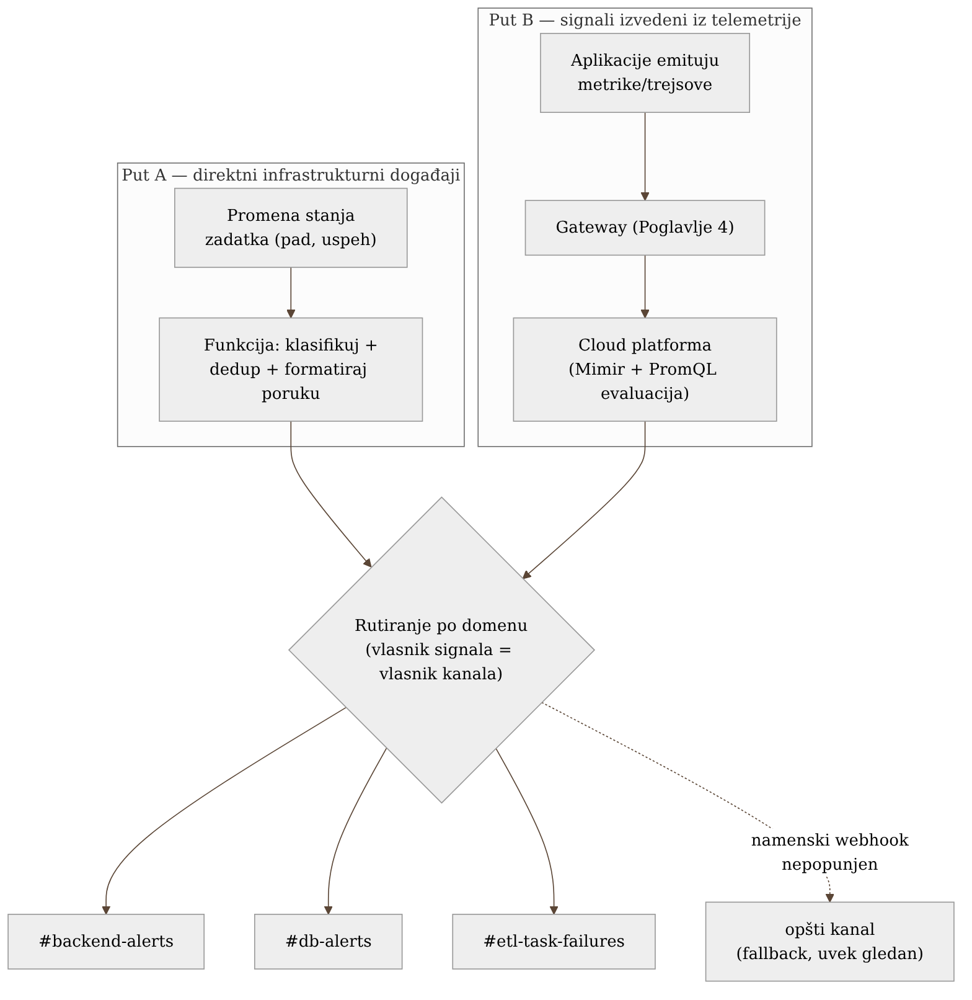

Poglavlje 13 — Arhitektura alarmiranja: dva puta, jedan odredišni kanal
Dispečerski centar hitne službe prima poziv na dva potpuno različita načina. Građanin diže telefon i bira broj — ljudski glas, opisuje šta vidi, često nesiguran u detalje. U isto vreme, senzor dima u zgradi na drugom kraju grada sam, automatski, šalje signal čim registruje čađ iznad praga — bez ijedne reči, bez čoveka koji bira broj. Ova dva signala ne dele ništa u tehničkom smislu — jedan je ljudski govor preko telefonske mreže, drugi je mašinski signal preko posvećene linije — a ipak oba završavaju na istom pultu, kod istog dispečera, jer dispečeru u tom trenutku nije bitno kako je signal stigao, nego da je stigao. Da je neko pokušao da natera senzor dima da "zove telefonom" radi doslednosti, samo bi dodao kašnjenje i tačku otkaza tamo gde nije trebalo da postoji.
13.1 Pitanje na koje ovo poglavlje odgovara
Sistem koji knjiga prati ima alarme koji stižu iz dva suštinski različita izvora — direktni događaji infrastrukture (da li je kontejnerski zadatak umro) i signali izvedeni iz telemetrije (PromQL upit nad metrikama koje gateway iz Poglavlja 4 prikuplja) — a oba na kraju stižu u iste Slack kanale. Ovo poglavlje odgovara na pitanje zašto se ta dva puta namerno ne stapaju u jedan zajednički mehanizam, i kako se, unutar tog dvostrukog puta, alarmi dalje raspoređuju po timovima koji ih treba da vide.
13.2 Kako je to urađeno — praktičan pregled
Put A — direktni infrastrukturni događaji. Kada kontejnerski zadatak u flotu za obradu podataka promeni stanje (zaustavi se, padne, ne uspe da se pokrene), cloud platforma emituje događaj u realnom vremenu — nema posrednika, nema metrike koja se prvo mora izračunati. Taj događaj direktno pokreće funkciju koja klasifikuje ozbiljnost, proverava da li je isti obrazac već nedavno prijavljen (da ne bi doslovno isti pad izazvao deset poruka), i šalje formatiranu poruku sa direktnim linkovima ka relevantnim dashboard-ima.
Put B — signali izvedeni iz telemetrije. Aplikacije šalju svoje metrike i trejsove kroz gateway iz Poglavlja 4, koji ih prosleđuje do cloud observability platforme. Tamo, PromQL upit periodično proverava da li neki uslov važi (na primer, da li je stopa grešaka prešla prag), i ako važi, platforma sama šalje alarm ka istom odredištu.
Oba puta na kraju stižu u iste Slack kanale — ali ne kroz isti mehanizam. Ovo je namerna arhitekturna odluka, ne istorijski nusprodukt: signal iz Puta A prirodno živi u infrastrukturnim događajima (nema smisla prvo pretvarati događaj u metriku samo da bi prošao kroz isti cevovod kao Put B), a signal iz Puta B prirodno živi u telemetriji (nema smisla izvlačiti ga iz platforme nazad u infrastrukturni sloj). Svaki put prati signal odakle prirodno živi, bez nepotrebnog cross-cloud skoka.
Raspodela po domenu — "vlasnik signala = vlasnik kanala"
Alarmi se dalje dele po domenu na koji se odnose, ne po tome kojim putem su stigli. Backend servis ima svoj kanal, baza podataka svoj, auth sloj (Keycloak-tipa identity provider) svoj, batch/ETL flota svoj, mrežni sloj svoj, serverska flota svoj. Princip je jednostavan: tim koji poseduje konkretan segment sistema treba da vidi baš njegove alarme, ne da ih pretražuje unutar zajedničkog, preplavljenog kanala. Signal sa Puta A (infrastrukturni pad zadatka) i signal sa Puta B (telemetrijski izveden alarm) za isti domen završavaju u istom namenskom kanalu — razlika u putu je nevidljiva timu koji čita alarm, i tako treba da bude.
Fallback lanac — alarm se nikad ne gubi
Svaki namenski kanal je zapravo posebna Slack integracija (webhook), i mehanizam koji bira koju integraciju koristiti radi po principu unazad odstupanje: prvo pokušaj namenski webhook za taj domen; ako nije podešen (prazna vrednost), padni nazad na sledeći širi kanal; ako ni taj nije podešen, padni na opšti, uvek-postojeći kanal. Ovo znači da uvođenje novog domena (novog namenskog kanala) nikad ne rizikuje da alarm potpuno nestane ako neko zaboravi da popuni konfiguraciju za taj kanal na vreme — alarm samo sleže jedan nivo šire, nikad se ne gubi u tišini. Ova odluka je posebno vredna zato što je suprotstavljena intuitivnom refleksu "podrazumevana ruta je mesto gde idu alarmi koje ne želimo da vidimo" — ovde je podrazumevana ruta stvaran, gledan kanal, ne kanta za otpatke.

13.3 Analitički deo — zašto se ne stapaju u jedan mehanizam
Zvanična preporuka: rutiranje po vlasništvu, ne po tehnologiji
Nezavisan pregled prakse rutiranja alarma dosledno preporučuje dvoslojni pristup: grubo rutiranje na nivou alatke za alarmiranje (koja platforma, koji tim), i fino rutiranje unutar toga (ozbiljnost, konkretna eskalacija). Redosled pravila treba da ide od najspecifičnijeg ka najopštijem, sa podrazumevanom rutom koja nikad ne sme biti tretirana kao "mesto gde idu alarmi koje ignorišemo" — tačno princip primenjen u fallback lancu opisanom iznad. Isti materijal preporučuje redovno merenje kolika procentualno alarma zaista pogađa namensku rutu naspram podrazumevane — cilj od 95%+ pokrivenosti namenskim rutama otkriva rupe u konfiguraciji pre nego što ih neko otkrije uživo, u trenutku incidenta.
Zašto ne postoji jedan univerzalan cevovod
Uobičajen nagon je forsirati sve kroz jednu platformu radi doslednosti — "sve treba da ide kroz observability platformu, zbog jednog mesta istine". Implementacija koju knjiga prati je eksplicitno odbacila taj nagon iz tri razloga: prvo, stanje infrastrukturnog zadatka prirodno živi u infrastrukturnim događajima, ne u metrici — forsiranje bi značilo ili objavljivanje tih događaja kao log linija ili sintetizovanje metrike samo da bi prošla kroz isti cevovod, dodatni skok bez koristi. Drugo, webhook URL-ovi bi morali ili biti konfigurisani na oba mesta (dupliranje, dva mesta koja mogu da se raziđu) ili bi jedno moralo da poziva drugo cross-cloud (dodatna operativna složenost i dodatna tačka otkaza). Treće, format poruke sa Puta A (bogat, sa specifičnom logikom po tipu zadatka i direktnim linkovima) je teško izraziti kroz šablone za alarmiranje observability platforme, koji su projektovani za drugu vrstu poruke.
Cena da je postojao samo jedan put: kontrafaktički scenario
Vredi konkretno odigrati alternativu u kojoj bi infrastrukturni događaji bili prisiljeni kroz observability platformu radi "jednog mesta istine". Svaki pad zadatka bi prvo morao biti pretvoren u log liniju ili sintetičku metriku, zatim čekati sledeći ciklus evaluacije PromQL upita (kašnjenje koje direktan događaj nikad ne bi imao), a sam webhook bi morao biti konfigurisan na strani cloud platforme umesto u infrastrukturnom nalogu — što znači da bi kvar cloud platforme (tačno onaj scenario koji Poglavlje 12 već pominje kao razlog za nezavisnost) mogao da obori oba puta odjednom, umesto da Put A ostane nezavisan i nastavi da radi dok se Put B oporavlja. Doslednost transportnog mehanizma bi bila kupljena po ceni upravo one nezavisnosti koja čini sistem otporan.
Vratimo se na dispečerski centar s početka poglavlja. Dispečer ne insistira da senzor dima "zove telefonom" da bi oba poziva izgledala isto na papiru — insistira samo da oba, ma kojim putem stigla, završe na istom pultu, kod prave jedinice, i da nijedan poziv ne nestane u tišini ako je linija za određenu jedinicu zauzeta. Dosledan izgled odredišta ne zahteva dosledan put do njega — zahteva samo da nijedan put ne otkaže na način koji povlači drugi sa sobom.
13.4 Skupljena pravila iz ovog poglavlja
- Ne forsiraj signal kroz tuđi transportni mehanizam radi doslednosti — neka svaki signal ide putem gde prirodno živi (infrastrukturni događaj kroz infrastrukturni put, telemetrijski signal kroz telemetrijski put).
- Rutiraj alarme po vlasništvu nad domenom (ko poseduje taj deo sistema), ne po tome kojim tehničkim putem su stigli — vlasnik signala treba da bude vlasnik kanala.
- Nikad ne tretiraj podrazumevanu/opštu rutu kao mesto za alarme koje ignorišeš — ona mora biti stvaran, gledan kanal, jer je to mesto gde sleže sve što još nema namensku rutu.
- Ugradi eksplicitan fallback lanac (namenski → širi → opšti kanal) tako da nepopunjena konfiguracija za novi domen preusmeri alarm umesto da ga izgubi.
- Meri redovno koliki procenat alarma zaista pogađa namensku rutu — pad tog procenta je rani signal da je neki domen prerastao svoju trenutnu konfiguraciju.
13.5 Vežba za čitaoca
Pronađi u svom sistemu bar dva alarma koja stižu potpuno različitim tehničkim putevima (jedan direktan događaj, jedan izveden iz upita nad metrikama). Da li oba završavaju u istom, ili bar predvidljivo povezanim odredištima? Ako namenska konfiguracija za jedan od njih nedostaje, gde tačno taj alarm završava — u nekom stvarno gledanom kanalu, ili tiho nigde?